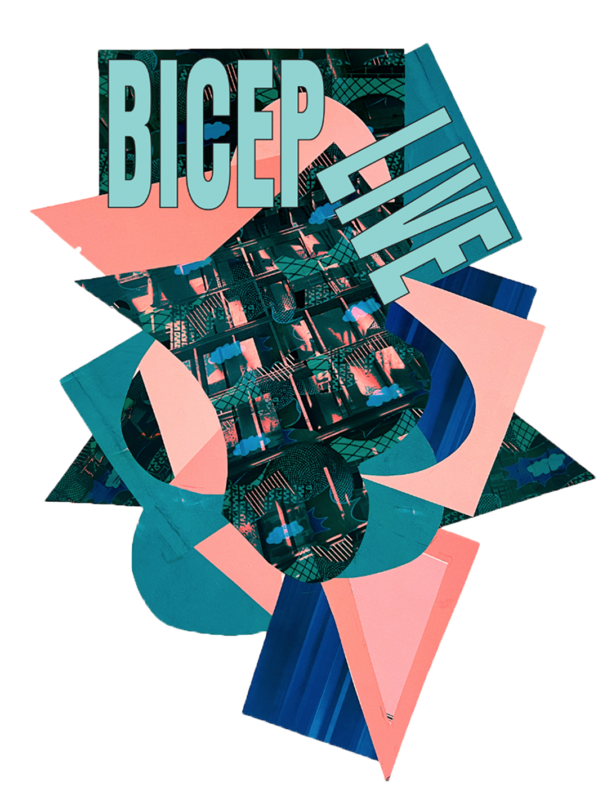
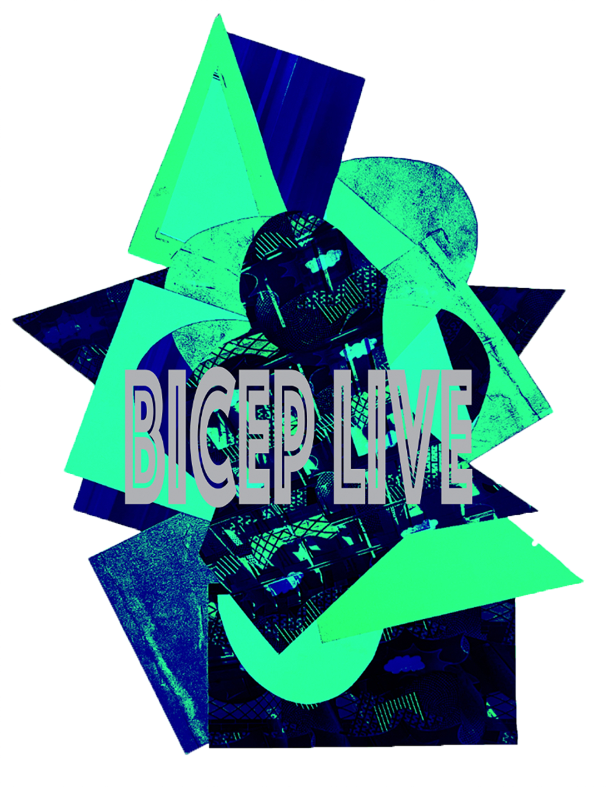
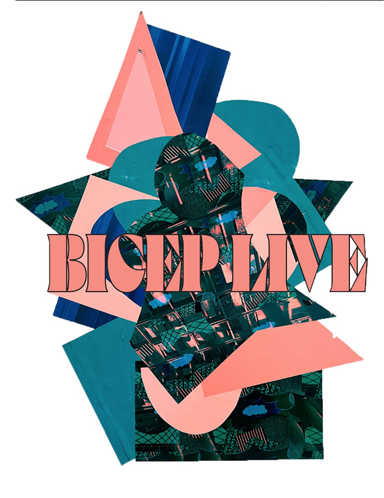
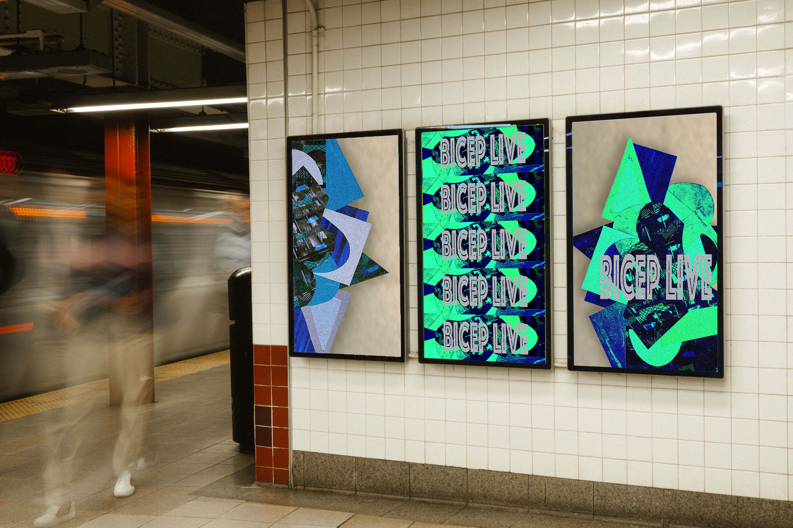

MUSE
Print Design | Visual Identity | Art Direction
An exploration of the visual identity created by the electronic music duo Bicep. Using experimental typography, abstract geometric forms, and layered compositions, this project develops a cohesive graphic identity that captures the energy of the 'muse'.

Research
The project began by exploring architectural forms and industrial structures, documenting geometric shapes, repeating patterns, and material textures.


Visual Development
Using Adobe Photoshop, I transformed my photographic research into a series of layered digital compositions. Using abstraction, colour experimentation and texture these developments evolved into a bold graphic system.


Identity Development
This graphic language was then refined through the exploration of layout, hierarchy, and composition, creating a flexible identity that could be adapted across multiple formats. These experiments allowed me to established a consistent visual system suitable for promotional applications.





Brand Application
The final identity was applied across a range of promotional materials, including posters, stickers, and apparel. Photographing these outcomes within urban environments allowed me to explore how the designs function in real-world contexts and communicate within public spaces.






As an extension of the project, I entered a competition celebrating the release of a new Bicep track, creating a visual response to the song which won the competition and tickets to their show. This experience reinforced my interest in using visual storytelling and social platforms as a way for audiences to connect with artists.